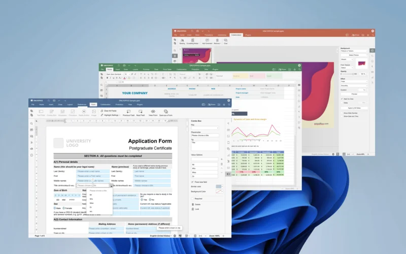

ONLYOFFICE
Bộ ứng dụng văn phòng mã nguồn mở, tương thích mạnh mẽ với Microsoft Office. Hoàn toàn miễn phí.

ONLYOFFICE là bộ ứng dụng văn phòng mã nguồn mở, hoàn toàn miễn phí, cho phép bạn làm việc với các tài liệu văn bản, bảng tính và bài thuyết trình. Điểm mạnh của ONLYOFFICE là khả năng tương thích cao với định dạng Microsoft Office (DOCX, XLSX, PPTX), giúp bạn dễ dàng mở và chỉnh sửa các file từ Microsoft Office mà không lo mất định dạng.
Phần mềm có sẵn cho Windows, macOS, Linux và cả phiên bản trực tuyến. Giao diện trực quan, quen thuộc giúp người dùng dễ dàng làm quen và sử dụng. ONLYOFFICE còn hỗ trợ làm việc cộng tác trực tuyến theo thời gian thực.